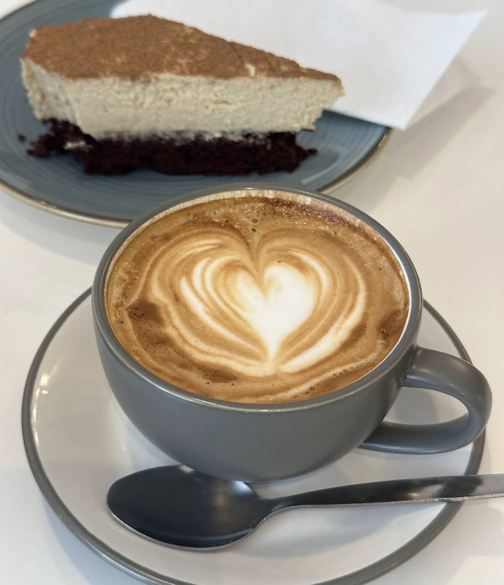

Specialty Coffee
Espresso, Cappuccino, Cortado, Flat White – frisch gemahlen, von Hand gezogen und mit Latte-Art serviert.
Dein Lieblingsplatz am Schadow-Karree – wo jeder Cappuccino von Hand gezogen, jeder Kuchen frisch gebacken und jeder Gast persönlich begrüßt wird.
Zwischen Königsallee und Schadowstraße haben wir einen Ort geschaffen, an dem die Zeit ein bisschen langsamer läuft. Warmes Licht, sanfte Rosétöne, der Duft von frisch gemahlenem Kaffee – und Kuchen, die jeden Morgen neu entstehen.
Ob schneller Flat White zum Mitnehmen, ausgiebiger Brunch mit Freundinnen oder ein cremiges Matcha am Nachmittag: Bei Fay bist du immer richtig.
— das Team von Fay Café

Cappuccino · Latte-ArtKompromisslos in der Qualität, herzlich im Umgang – so schmeckt Fay.
Espresso, Cappuccino, Cortado, Flat White – frisch gemahlen, von Hand gezogen und mit Latte-Art serviert.
Ceremonial-Grade Matcha, sanft aufgeschäumt – als Iced Latte, warm oder in unseren Kuchen des Tages.
Jeden Tag frisch gebacken – von Carrot Cake bis Chai-Cheesecake, viele Sorten auch vegan.
Ein kleiner Auszug – die ganze Karte wechselt saisonal und bei den Kuchen sogar täglich.
Sanftes Licht, cremiger Schaum, süße Pausen – so sieht ein Tag bei uns aus.
„Super gemütliches Café mit einer richtig tollen Atmosphäre. Die Desserts sind einfach unglaublich lecker … Der Kaffee war auch top! Besonders der herzliche Service – man fühlt sich sofort willkommen. Ich komme auf jeden Fall wieder!"
„Wie liebevoll kann man einen Kaffee servieren? Das ist echt ein Geheimtipp für Kaffeeliebhaber. Mega nette Bedienung, ruhige Atmosphäre, tolle Einrichtung und perfekter Geschmack!"
„Absolut positiv ist das freundliche, zuvorkommende und liebenswerte Personal. Die fancy Getränke und das Essen waren sehr lecker – alles frisch und optisch toll zubereitet."
Komm vorbei, hol dir deinen Lieblingskaffee oder frag einen Tisch für deinen nächsten Brunch an – wir freuen uns auf dich.